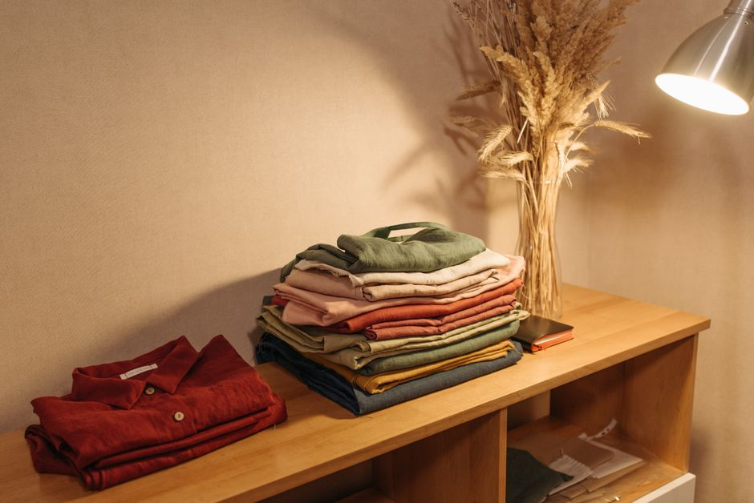

生活雑貨
ゴミ出し・ゴミ袋収納をすっきりさせる整理のコツ
2026-11-03

ゴミ袋はストックしておくと便利ですが、引き出しの中でぐちゃぐちゃになったり、分別ゴミ箱がかさばって通路をふさいだりしやすいアイテムです。少しの工夫で取り出しやすく、散らかりにくい収納に近づけられます。
ゴミ袋がかさばる・散らかる原因
ゴミ袋の収納が乱れやすいのは、サイズ違いの袋が一緒に入っていて必要なものを探しにくかったり、しまう場所と使う場所が離れていて出し入れが手間に感じられたりすることが背景にあります。また分別ゴミ箱を複数置いている家庭では、分別・移動・袋交換といった工程が多くなることもストレスの一因とされています。まずは自分の家でどの工程が負担になっているかを振り返ってみると、どこから手をつければよいか見えやすくなります。
サイズ別に分けて収納する
レジ袋やゴミ袋は、ゴミ箱にそのまま使いやすい大きめサイズと、それより小さいサイズとに分けて収納すると、使うときに迷いにくくなります。サイズごとにケースやファイルボックスを用意して分けておくだけで、必要な袋をすぐ選べるようになり、日々の小さな手間を減らせます。畳んで整えて収納しようとすると手間がかかって続きにくいこともあるため、丸めて入れるだけのシンプルな方法を選ぶのも一つの考え方です。
吊るす・立てる・寝かせる収納アイデア
ゴミ袋の収納には、突っ張り棒を使って壁やシンク下に吊り下げる方法、ファイルケースやファイルボックスに立てて収納する方法、クリアファイルを使って薄型に収納する方法などがあります。これらは引き出しの中に平置きするよりも省スペースになりやすく、キッチンの隙間などのデッドスペースを活用できる点が特徴です。100円均一ショップではタオルハンガーやファスナー付きファイルケース、ハンギングホルダーなどゴミ袋収納に使えるアイテムが扱われているため、自宅の収納スペースの形に合わせて組み合わせを検討してみるとよいでしょう。
分別ゴミ箱の配置を見直す
分別の種類が多い家庭では、シンク下などに収納ボックスを置いて分別拠点をまとめる方法や、突っ張り棒にS字フックをかけてレジ袋を吊るす方法が紹介されています。通行の邪魔にならない薄型の分別ラックを選ぶことも、キッチンの隙間を活かした工夫の一つです。ゴミ箱自体についても、容量や蓋の有無、分別のしやすさを基準に選び直すことで、日々の作業がスムーズになる場合があります。
定位置とワンアクションを意識する
ゴミ袋収納をすっきり保つコツとして、しまう場所を一箇所に決める「定位置」と、袋を取り出すまでの動作をできるだけ少なくする「ワンアクション」の二つを意識する方法が紹介されています。畳む・結ぶといった手間のかかる動作を減らし、置くだけ・引っかけるだけで済む仕組みにしておくと、無理なく続けやすい収納になります。家族で使う場合は、誰が見ても分かりやすい置き方にしておくことも大切です。
ゴミ袋収納は、サイズ分けと置き場所の工夫、そして取り出しやすさを意識するだけで整いやすくなります。自宅の収納スペースに合う方法を少しずつ試してみてください。
読み込み中...